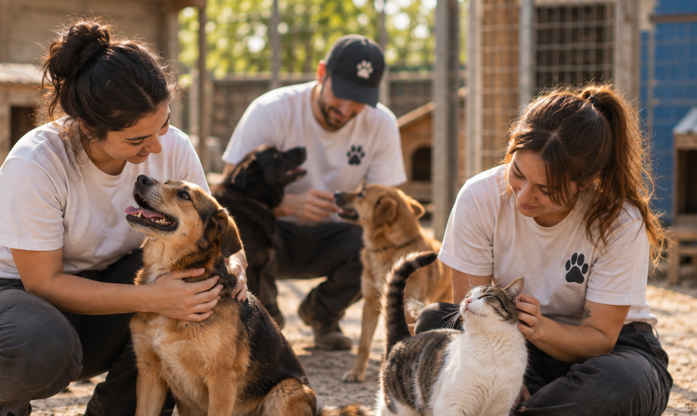
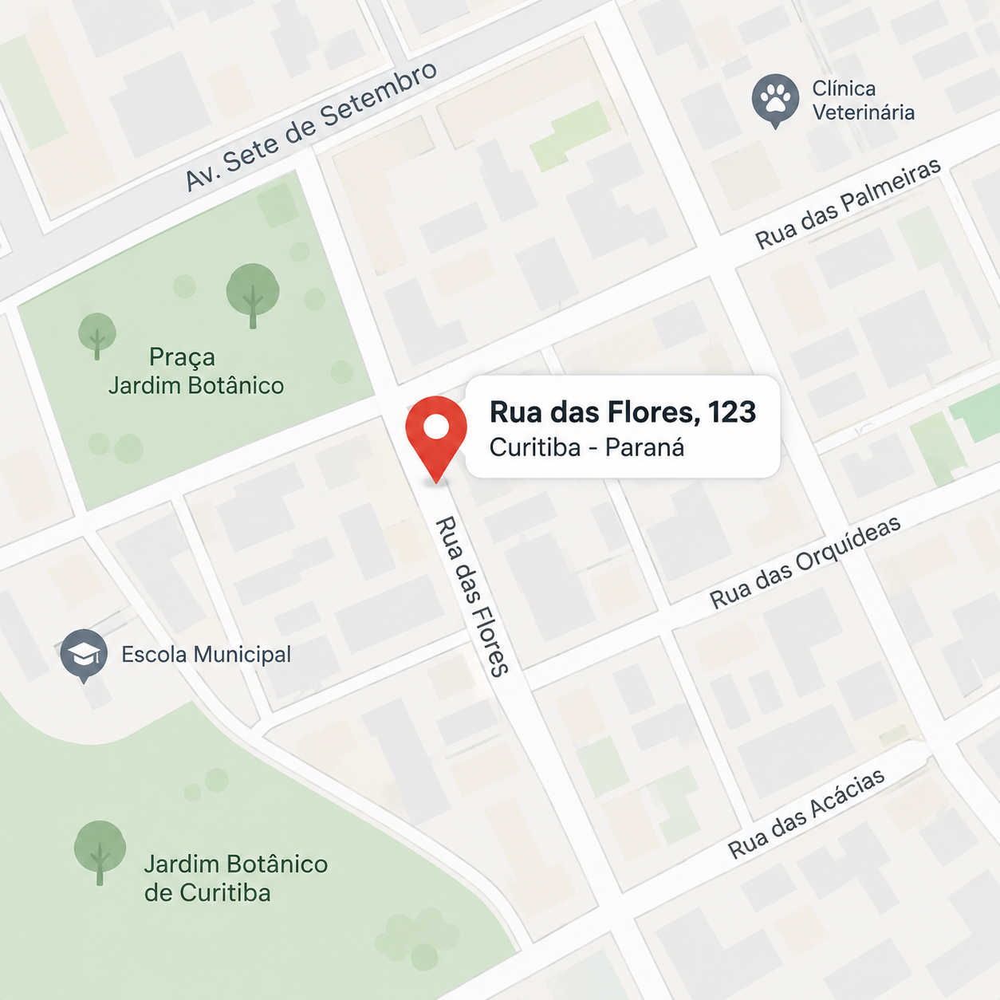

Animais Sem Teto

Quem somos
A Animais Sem Teto é uma organização que atua no resgate e cuidado de animais em situação de abandono, buscando proporcionar uma nova oportunidade por meio da adoção responsável.

Endereço
Rua das Flores, 123 – Curitiba, Paraná
Contato
Telefone: (41) 99999-9999 E-mail: contato@animaissemteto.org.br